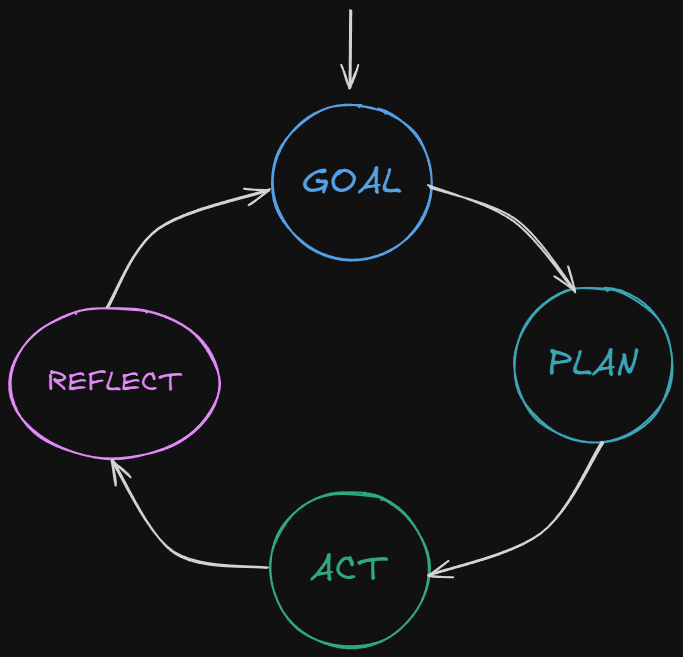
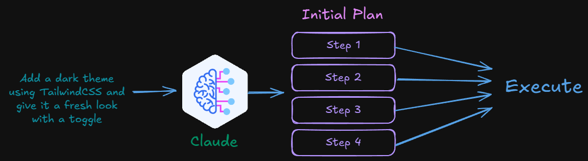
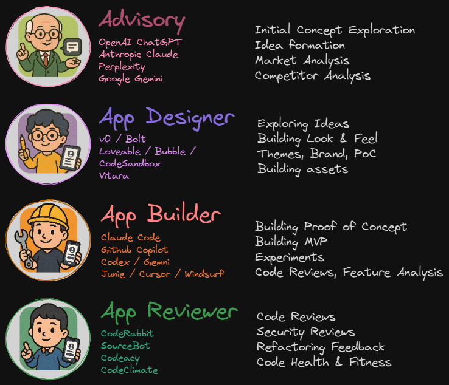
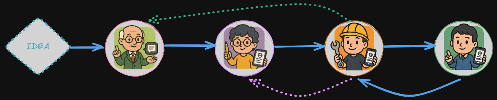

✻ Building with Agents in August 2025
What the heck are agents?
We'll find out...
Agents in Essence

Agents in Task Decomposition

Our AI Toolbox
Working Smarter not Harder
August 2025Toolbox Overview

The Process

Pivot Profiles
Consulting ChatGPT
August 2025Pivot Profiles - What We're Building
A streamlined, trackable way to manage & share Consultant Profiles.
Find useful datapoints about the Pivots to do cool things...
...and get rid of Sharepointless most importantly!
Current Challenges
- Profiles are Word docs in SharePoint → stale, hard to update, emailed without control.
- Sales must chase updates; formatting is inconsistent & varied styles / templates.
- Once shared, we lose visibility: who viewed, what they read, downloads.
Single Source of Truth
- Profiles in Markdown + YAML (Git) with a clear schema.
- Brand-correct renders to Web / PDF / Word.
- Automated nudging to keep profiles fresh.
System Overview
- Convert existing Word resumes → structured YAML/Markdown.
- Pivots maintain their profile in Git (single source of truth).
- Sales app to manage engagements, scope what's shared, and send links.
- Client viewer to securely read profiles and download allowed formats.
- Analytics & revocation built in at every step.
Scoped, Secure Sharing
- Sales create an Engagement, pick consultants, choose sections to expose.
- Add attachments, set expiry/watermarks, send recipient-specific secure links.
- Instant revocation when access should end.
Actionable Signals
- Track real opens (filter scanners) & attention minutes.
- See sections viewed and downloads per recipient.
- Live counters in the Sales dashboard.
Future Vision
- Profiles become structured data assets.
- Combine with skills matrix & engagement history.
- Match the right Pivot to the right gig faster and with confidence.
Exploring Concept
Using AI Toolbox
chatgpt.com/share/pivot-profiles
+ Claude Code
Pray ye to demo gods!
Links
Claude Code
Optimising Workflow
Think big, build small
Explore concept with an Advisor, build a detailed plan with Claude (/plan-mode) but phase them.
🎯 Phase strategically
- Think & Plan with Opus
- Build with Phases
- Orchestrate with Opus
- Develop with Sonnet
PD may have 50 phases.
🧠 Smart context
--model opusfor reasoning--model sonnetfor work--clearnot--compact
Clear Claude after task.
⚡ Scale patterns
- Modularise per subagent
- Template first, iterate
- Test incrementally
- Commit each phase
Progression in Git.
Use the right model and reduce context & save tokens!
Claude Code
Phase Detailed Build ExampleClaude Code
MCP Addons
What are they?
- Universal AI-Tool Bridge - Open protocol standardising connections between AI and external systems (the USB-C for AI)
- Pre-built Integrations - Ready-made servers for Supabase, Github, APIs and development tools
- Three Core Capabilities:
- Resources (file-like data access)
- Tools (executable functions with approval)
- Prompts (templated workflows)
- One-Click Installation - Simple
claude mcp addcommands replace complex manual configuration - Local & Secure - Servers run on your machine, keeping sensitive data private
- *BUT* - Would strongly evaluate MCP security boundaries & privacy
- Context-Aware Coding - Makes entire codebases searchable and accessible to Claude
- Real-time Data Access - Live connections to APIs, databases, semantic search and external services during development
Categories of MCP
🧠 Context
Tools to help Claude understand APIs/tools better
🔍 Semantic Search
Better tools than grep/ripgrep
💭 Thinking
Approaches for more structured reasoning
🛠️ Tools
General-purpose actions Claude can perform
Context: Context7 / Ref
Gives Claude the latest API/Reference documentation for tools - no more TailwindCSS blues!
Keeps Claude up to date with latest API changes
Try both, you *may* like Ref over Context7
Thinking / Semantic Code
Give Claude better opportunties to think & nudge in the right way
Give Claude better ways to search code (symbols, methods) rather than ripgrep/grep
These are configured per project (notice the pwd?)
Make life easier
Add an alias to add these to each project (see my dotfiles)
if [ -x "$(command -v claude)" ]; then alias claude-mcp-init=' claude mcp add serena -- uvx --from git+https://github.com/oraios/serena serena start-mcp-server --context ide-assistant --project $(pwd) && claude mcp add sequential-thinking -- uvx --from git+https://github.com/arben-adm/mcp-sequential-thinking --with portalocker mcp-sequential-thinking && claude mcp add --transport http context7 https://mcp.context7.com/mcp ' fi
Then when you have a new project you can simply do:
Added stdio MCP server serena with command: uvx --from git+https://github.com/oraios/serena serena start-mcp-server --context ide-assistant --project D:/projects/talk-claude-control/examples/pivot-profiles/src to local config File modified: C:\Users\thush\.claude.json [project: D:\projects\talk-claude-control\examples\pivot-profiles\src] Added stdio MCP server sequential-thinking with command: uvx --from git+https://github.com/arben-adm/mcp-sequential-thinking --with portalocker mcp-sequential-thinking to local config File modified: C:\Users\thush\.claude.json [project: D:\projects\talk-claude-control\examples\pivot-profiles\src] Added HTTP MCP server context7 with URL: https://mcp.context7.com/mcp to local config File modified: C:\Users\thush\.claude.json [project: D:\projects\talk-claude-control\examples\pivot-profiles\src]
Using those MCPs
... end with: Ensure you use: - serena for semantic code retrieval and editing tools - context7 for up to date documentation on third party code - sequential thinking for any decision making Read the claude.md root file before you do anything. Ask any clarifying questions or confirm your understanding before you start.
Use MCPs Carefully
Each MCP adds extra token usage, so be mindful of your limits.
- Decide on core MCPs (like my
claude-mcp-initalias) - Add others when necessary for projects eg.
Supabase - Monitor MCP token usage with
/context - Always verify MCPs and security, some are badness!
Always remember less > more
Whats New
Claude Code
August 2025Opus Plan Mode
Get the best of Opus (brains) and Sonnet (work ethic) with Claude Code.
Paste Images easily
Windows: ALT+V | Mac/Linux: CTRL+V
Claude Context
Understand the context usage in Claude Code easily
⛁⛁⛁⛁⛁⛁⛁⛁
⛶⛶⛶⛶⛶⛶⛶⛶⛶⛶
⛶⛶⛶⛶⛶⛶⛶⛶⛶⛶
⛶⛶⛶⛶⛶⛶⛶⛶⛶⛶
Questions?
Let's discuss!
Resources
- Claude Code Home
- Claude Code Workflows (Anthropic)
- Claude Code Best Practices (Anthropic)
- Claude Code Best Practices (AIXplore)
- Awesome Claude Code